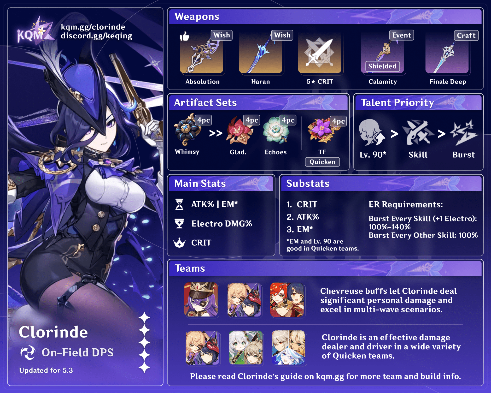

Clorinde
Element: Electro
Weapon: Sword
Role: DPS
Clorinde is a playable Ousia-aligned Electro character in Genshin Impact. She is the strongest Champion Duelist in Fontaine and once served as Furina's bodyguard.
Disputes are a Mora a dozen in Fontaine, day in and day out. A confectioner might accuse another of stealing their recipe — and not only that, but replacing Bulle Fruit peel with Mint, thus bringing disgrace not only upon themselves, but upon the very dessert itself! Or a playwright might accuse a fanatical reader of imitating their style and taking up a pen name too close to their own, to the point that even the newspapers could not distinguish the genuine article. A merchant might accuse a colleague of targeted, malicious, cutthroat competition, of not only constantly adjusting their prices, but of intentionally setting up shop directly opposite them... Almost everyone claims to be wholly in the right, appealing incessantly for the support of passersby in the hope of swaying the crowd and winning their case in the court of public opinion. Most of the time, such disputes are settled with relative ease, either by Gardes or by Gestionnaires rushing onto the scene. But there will always be a minority of claimants who, acting with ulterior intentions, will obstinately press for court proceedings just to get their name out there. "I'll see you in court!" comes the challenge. When things reach this stage, any hope that the voice of reason might prevail starts to buckle under the unstoppable force of emotion, neither side willing to give an inch as they begin to square off for a legal showdown. Until, that is, an exasperated Gestionnaire standing by — long since having given up any hope of successful mediation — interjects in a tone of despair: "Alright, I respect your right to take this to the courts. But before you do, you must make the following preparations..." "...Once judgment is pronounced, if you believe the verdict to be unjust, you may propose that the matter be settled by a duel." "To my knowledge, the most recently rostered Champion Duelist is Miss Clorinde..." As soon as the name of Clorinde is mentioned, all bickering comes to an abrupt halt. For all are well-acquainted with the name of this undefeated Champion Duelist. Beneath her blade, all despicable deeds that aim to capitalize on mere fortune under the guise of decency will show their true colors — and she has never once known defeat in a duel. "...Ahem. Oh, uh... I suppose there's no need to go that far, is there?" Thus are such marketplace altercations, undercut by ulteriority, temporarily dissipated. Watching the two self-seeking merchants leave the scene with their tails between their legs, the Gestionnaire lets out a knowing laugh, then gives the younger, still uncomprehending colleague beside them a pat on the arm, and says: "You see, the sword is mightier than the pen, after all."
